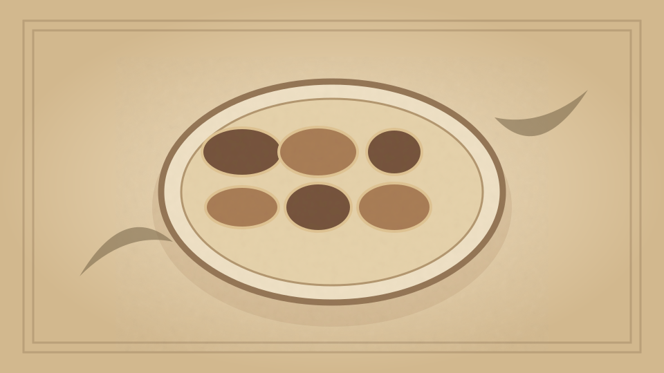

1910 · Fannie Merritt Farmer · FISH
Planked Shad or Whitefish
The Boston Cooking-School Cook Book

Historical Recipe
The following text is extracted from the 1910 edition, retaining historical terminology and quantities.
Original Ingredients & Directions
Clean and split a three-pound shad. Put skin side down on an oak plank one inch thick, and a little longer and wider than the fish, sprinkle with salt and pepper, and brush over with melted butter. Bake twenty-five minutes in hot oven. Remove from oven, spread with butter, and garnish with parsley and lemon. The fish should be sent to the table on plank. Planked Shad is well cooked in a gas range having the flame over the fish.
The Planked Whitefish of the Great Lakes has gained much favor.
168 Planked Shad with Creamed Roe
Automatically extracted transcription; editorial verification pending. Historical instructions may not meet modern food-safety standards.